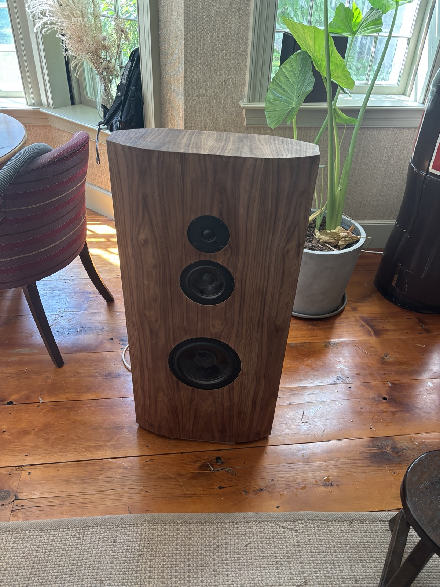
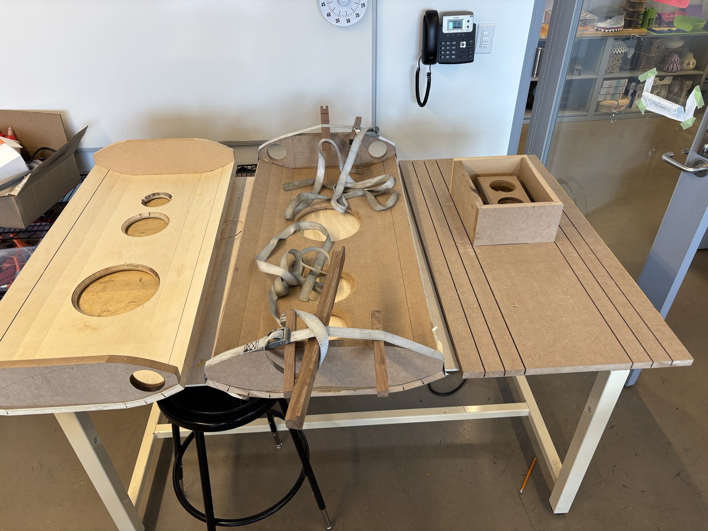
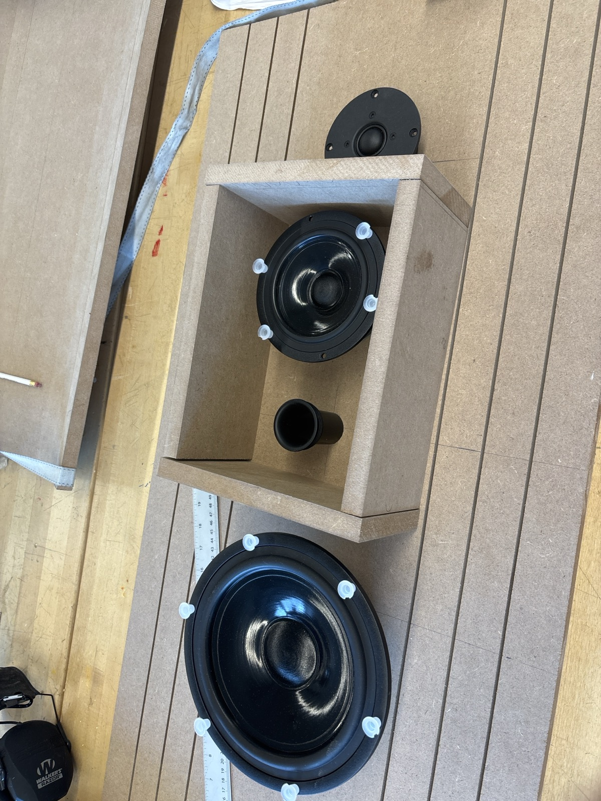
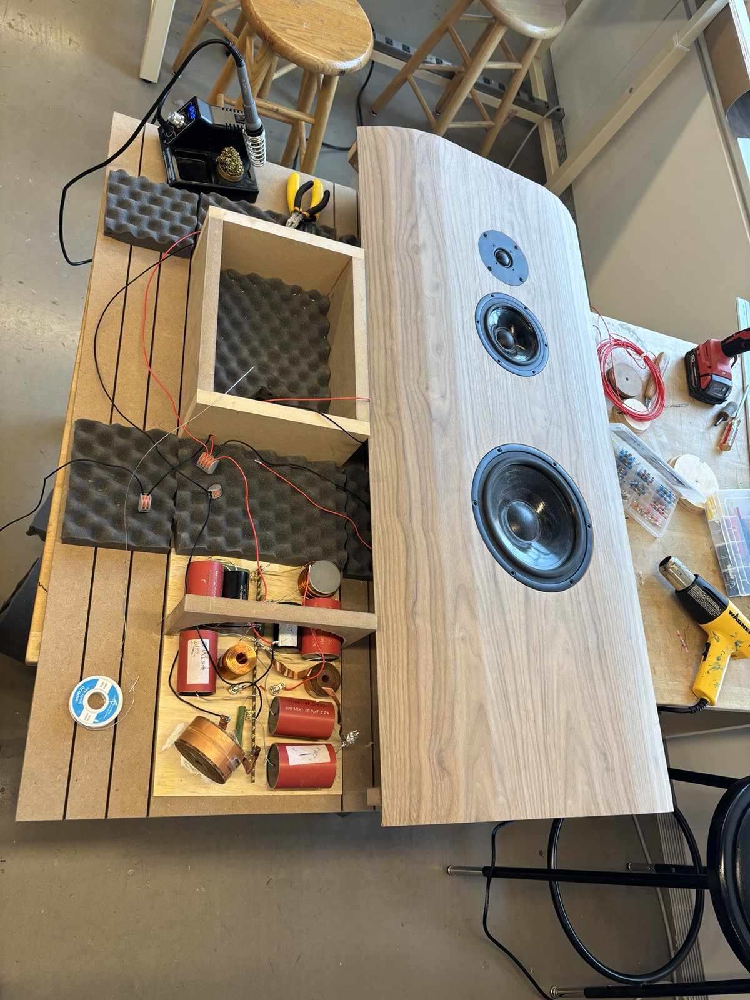

Experience & personal projects
Other work
Engineering experience and personal projects outside my university research.
FIRE1
Worked with the implantation team to investigate NORM Sensor deployment problems involving a titanium-alloy frame, and evaluated alternative catheter-based implantation methods.
Engine work
Assisted mechanical engineer Lee Gagne with engine teardown, inspection, reassembly, precision measurement, component refurbishment, and system testing.
Loudspeakers
Adapted an existing loudspeaker design into a custom build, fabricating CNC-routed MDF enclosures and assembling the drivers, passive crossovers, and internal wiring. Evaluated the finished speakers through listening tests and frequency tests using a signal generator. These tests revealed a rattle, which I traced to a loose wire connection. Securing the connection eliminated the rattle on retesting.
The most challenging part was forming the curved cabinet panels. I calculated the kerf spacing and cut depth to create the curve, then carefully handled and shaped the delicate cut panels.








Amateur radio
Amateur Extra licensed operator. Built and tuned multi-band transceivers.